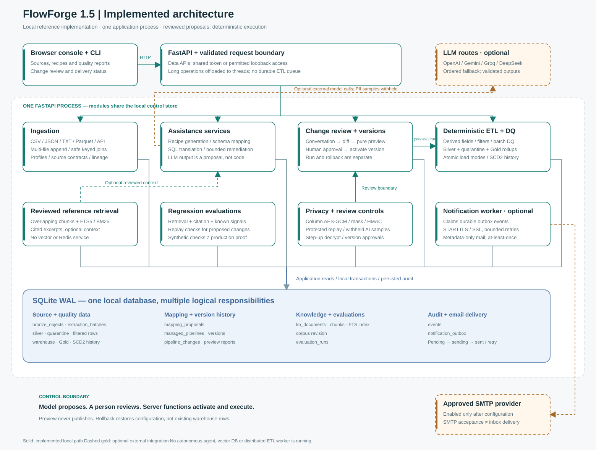
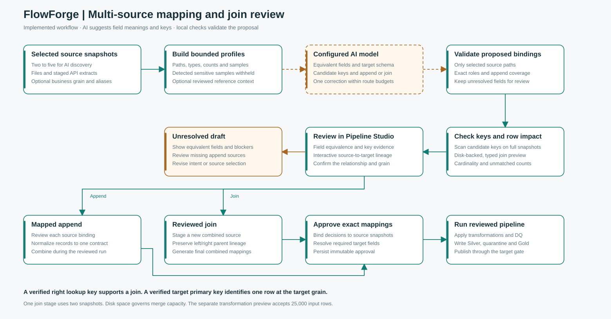
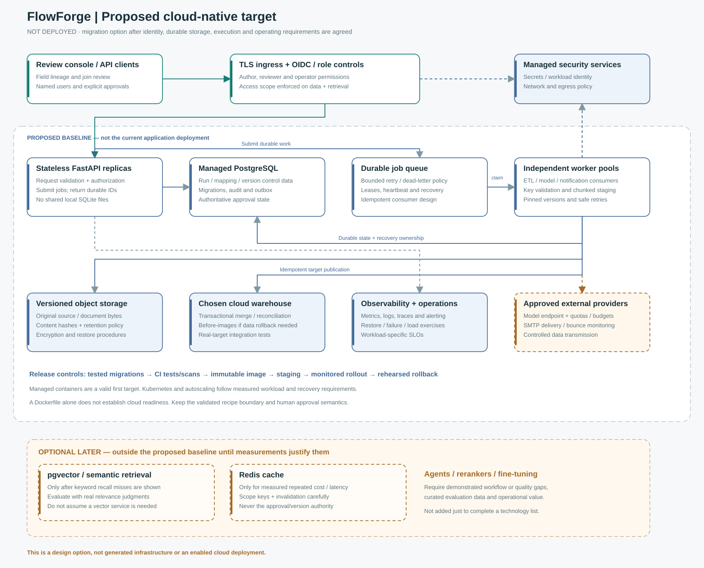

Model authority stops at the proposal
Typed operations, source paths, policy checks and candidate hashes are checked by server functions. Model output cannot authorize a publication.
What runs today, where human review is enforced, and what a cloud-native evolution would require.
A modular local application with chunked source storage, reviewed model proposals and deterministic ETL. Model routes and SMTP are optional integrations.

Open full-size SVG · Editable Mermaid source
Typed operations, source paths, policy checks and candidate hashes are checked by server functions. Model output cannot authorize a publication.
Preview publishes zero rows. A human reviews the exact candidate, activates a version, then separately authorizes a run.
An outbox event is saved with the applied change. Optional SMTP delivery retries independently and may produce duplicates after uncertain delivery.
Field equivalence, join keys and target primary keys answer separate questions. The model proposes business matches. Full-snapshot checks validate candidate keys and preview joins before staging.

Open full-size SVG · Editable Mermaid source · Workflow guide
Preserve the recipe and human-review boundaries. Replace local control/storage and request-bound execution before introducing multiple replicas or autoscaling.

Open full-size SVG · Editable Mermaid source
Validate a cloud load plan, add named roles, migrate control data and introduce encrypted source-byte storage with tested migrations and restores.
Introduce queue-backed workers, leases, idempotent target writes, observability, staging, security gates and a rehearsed rollback process.
Vector search, Redis, agents and fine-tuning are deferred until representative evaluations or measured workload justify their cost and complexity.
The latest implementation record has 197 passing tests. A disk-backed join retained 25,007 rows. Live Groq checks used synthetic data to verify equivalent field detection and a reviewed join. Browser checks covered interactive mapping lineage. SMTP, deployed cloud execution and production workloads require separate verification.
Medallion ETL guide · Column PII controls · Cloud load configuration · 49-point coverage · System guide · Conversational change workflow · Email delivery configuration · Production migration assessment